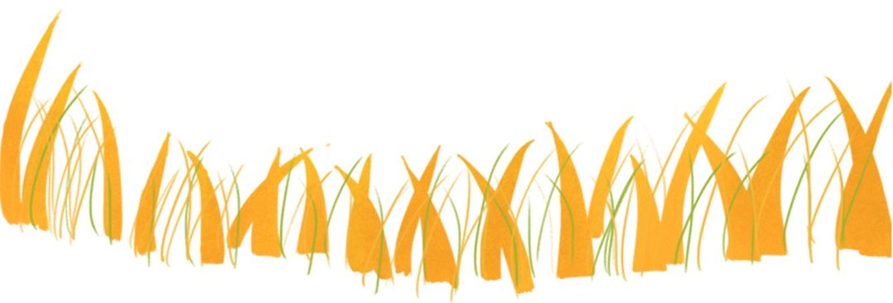
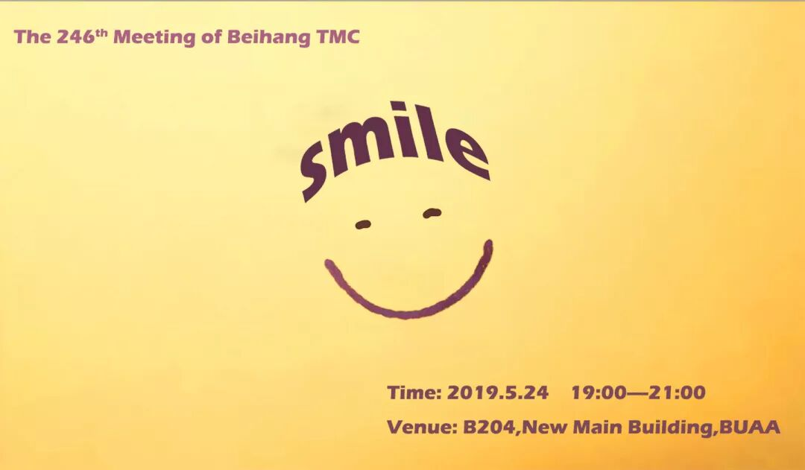

在头马圈，有一个传奇的人，一段离奇的传说。
一个曾经连英语及格线都遥不可及的人，却通过努力当上新东方英语老师。
只有5个月头马年龄的他，势如破竹，气势如虹，一路过关斩将，从俱乐部一路突出重围到了大区演讲比赛舞台。
他在过去9年，深耕企业商务英语培训，成功帮助无数中国企业家，自信地在世界舞台发出了中国声音。
... ...
他，就是来自思维导图中英文演讲俱乐部和创业俱乐部，中区中文+英文演讲冠军——Freedom!
本期让我们倾听“You Are What You Believe”的赵智力，为大家带来的《三招帮你提升备稿演讲》工作坊。
会议时间：2019.5.24 ，19：00—21：00
会议地点：北航新主楼，B204教室
大咖分享
Freedom

海报|Chen
文案|Cynthia,Ellen
编辑|Chen
原文链接（公众号关闭后可能失效）：
https://mp.weixin.qq.com/s/jQeldSGKtA4n7k09gkSF3A
https://mp.weixin.qq.com/s/jQeldSGKtA4n7k09gkSF3A
第 520/539 篇 · 北航Toastmasters英文演讲俱乐部公众号存档
本页为抢救式本地归档，图文已永久保存。
本页为抢救式本地归档，图文已永久保存。